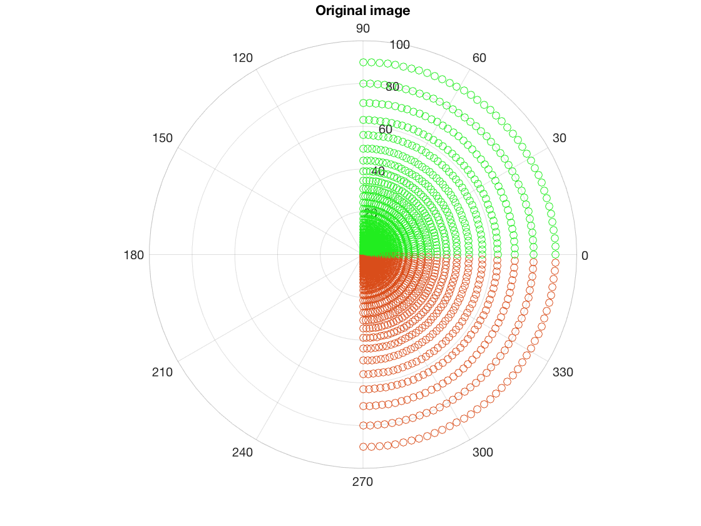
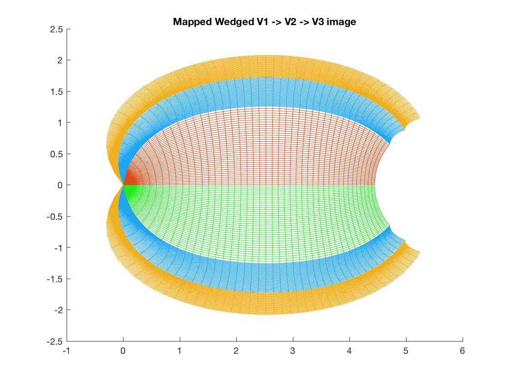

Contents
function [Maps] = wedgedMapping(fname)
Plotting the wedged dipole topographic map of V1 through V3
This was NE780's final project.
The idea was to map a hemifield onto V1 -> V2 -> V3 using the wedged dipole model. Previously, inputs for each visual area were computed on the polar plot and then mapped. This function applies the model to the original image onto V1 only, and after that it's only sheared and applied directly from V1 to V2, and so on.
The log model is: log(z + alpha)/log(z + beta), using complex coordinates Z. The wedge is applied to theta within z = r * exp(1i * (theta * shear)) + a or b;
alpha prevents the log to go to infinite once r and theta get super small beta allows the end of the map to close down again for large values of r,theta. So, beta discounts a lot at higher values of the parameters. Plotting using either alpha or beta, without taking their difference, gives a monopole map.
The image is compartmentalized into 2 quadrants per hemifield, and the models/shear applied to each quadrant individually. This allows for specification of distinct ventral and dorsal azimuthal shearing.
% in case no image is given if (nargin == 0) fname = 'steve.png'; end % general aesthetic parameters green = [.13,.93,.12]; orange = [.85 .3 .1]; blue = [.13,.65,.93]; yellow = [.93 .69 .13]; % function applying the polar coordinate-based log mapping model dipole = @(r,theta,alpha) r.*exp(1i.*theta) + alpha; % function for the wedged version % param is the control of extremes % shear is the theta-modulating shear % Note: eccentricity is vital for the curvature calculations phi = @(theta,shear) shear.*theta; wdgdDipole = @(r,theta,param,shear) r.*exp(1i.*phi(theta,shear)) + param; % load image % one problem worth solving is the scale of the image. If the polar angle is even it might not work % No need for p = loadIm() anymore img = im2double(imread(fname)); % model parameters alpha = 0.5; beta = 80; shearV1 = 0.90; shearV2 = 0.37; shearV3 = 0.75; % since the shear is a proportion of V2, so this ~0.25 K = 15; % global scale parameter xShift = log(alpha/beta); % to bring the map origin to 0 instead of -X [azimuth,nEcc,depth] = size(img); % total observations (for right hemifield only) nEccentricity = nEcc/2; nAzimuth = round(azimuth/2); % has to be an odd number because the HM is shared in the visual field % rho (equivalent to x) % create 'r' exponentially spaced in [0, 'ecc'] ecc = 90; % extent of visual field eccentricity radius = linspace(log(alpha), log(ecc+alpha), nEccentricity); eccentricity = ( exp(radius) - alpha ); % theta is y in radians theta = linspace(-pi/2,pi/2,azimuth); theta2 = theta(1:nAzimuth); % low right hemifield theta3 = theta((nAzimuth):azimuth); % image cut in half (for the right hemifield) imgR = img(:,(nEccentricity+1):nEcc,:); imgRupper = imgR(1:nAzimuth,:,:); imgRlower = imgR(nAzimuth:azimuth,:,:);
Representation of the coordinates
original points on the polar plot
for k = eccentricity %1:90 polarplot(theta2,k,'o','Color',orange); % single vector: polarplot(theta2(3),eccentricity,'o') hold on polarplot(theta3,k,'o', 'Color',green); end title('Original image') clear j k % this plots the dipole topographic comformal map figure hold on % plot by eccentricity for k = eccentricity % plot a point from the upper hemifield map = K.*log(dipole(k,theta2,alpha)./dipole(k,theta2,beta)) - K.*xShift; % the last subtraction puts the map at 0 plot(real(map),imag(map),'Color',green); xlim([-10 160]); % plot a point from the lower hemifield map = K.*log(dipole(k,theta3,alpha)./dipole(k,theta3,beta)) - K.*xShift; plot(real(map),imag(map),'Color',orange) end % plot by polar angle for j = theta2 map = K.*log(dipole(eccentricity,j,alpha)./dipole(eccentricity,j,beta)) - K.*xShift; plot(real(map),imag(map),'Color',green) end for j = theta3 map = K.*log(dipole(eccentricity,j,alpha)./dipole(eccentricity,j,beta)) - K.*xShift; plot(real(map),imag(map),'Color',orange) end title('Mapped V1 image') clear j k %------------- wedged dipole section------------------ % This will produce isoeccentricity and isopolar wedged maps % Note: the output matrix of both wedge maps is the same, just transposed % REMINDER: Green is upper visual hemifield, lower V1 % -----V1 % full and partial hemifield maps wdgdMapV1 = []; wdgdMapV1lower = []; wdgdMapV1upper = []; indx = 1; for k = eccentricity % create coordinate mapAll = K.*log(wdgdDipole(k,theta,alpha,shearV1)./wdgdDipole(k,theta,beta,shearV1)) - K.*xShift; mapUpper = log(wdgdDipole(k,theta2,alpha,shearV1)./wdgdDipole(k,theta2,beta,shearV1)); % - log(alpha/beta); mapLower = log(wdgdDipole(k,theta3,alpha,shearV1)./wdgdDipole(k,theta3,beta,shearV1)); % + log(alpha/beta); % store in map wdgdMapV1(indx,1:azimuth) = mapAll; wdgdMapV1lower(indx,1:nAzimuth) = mapUpper; % wdgdMapV1lower.' is equal to the x,y orientation of the image wdgdMapV1upper(indx,1:nAzimuth) = mapLower; indx = indx + 1; end % IMPORTANT: A.' TRANSPOSES WITHOUT CONJUGATION (SIGN REVERSAL OF THE IMAGINARY PART) % THIS MEANS THAT ALL THE INFORMATION ABOUT THE QUARTER HEMIFIELD CAN BE % CONTAINED IN A SINGLE MAP % plot full hemifield plot(wdgdMapV1 + 80,'Color',blue); % +80 so it's plotted to the right of the original, unwedged plot(wdgdMapV1.' + 80,'Color',blue); title('Mapped Wedged V1 image') % plot partial hemifields figure; hold on plot(wdgdMapV1lower - xShift,'Color',green); plot(wdgdMapV1lower.'- xShift,'Color',green) plot(wdgdMapV1upper - xShift,'Color',orange); plot(wdgdMapV1upper.'- xShift,'Color',orange) title('Mapped Wedged V1 -> V2 -> V3 image') % -----V2 % Notes: only the shear is applied, working as a physical limitation of the angular space % in other words, the imaginary part of the preceding area is sheared and flipped, maintaining the real part for eccentricity constancy % this somewhat mantains the iso-eccentricity contours intact wdgdMapV2lower = areaTransform(wdgdMapV1lower, shearV2, 1, -1); wdgdMapV2upper = areaTransform(wdgdMapV1upper, shearV2, 1, 1); % plot V2 plot(wdgdMapV2lower - xShift,'Color',blue) plot(wdgdMapV2lower.' - xShift,'Color',blue) plot(wdgdMapV2upper - xShift,'Color',blue) plot(wdgdMapV2upper.' - xShift,'Color',blue) % -----V3 % resulting map for V3 wdgdMapV3lower = areaTransform(wdgdMapV2lower, shearV3, 2, -1); wdgdMapV3upper = areaTransform(wdgdMapV2upper, shearV3, 2, 1); % plot V3 plot(wdgdMapV3lower.' - xShift,'Color',yellow) plot(wdgdMapV3lower - xShift,'Color',yellow) plot(wdgdMapV3upper - xShift,'Color',yellow) plot(wdgdMapV3upper.' - xShift,'Color',yellow) clear ecc K indx 
plotting the image based on the resulting maps
% original image figure imagesc(img) title('Original Image') % right hemifield figure imagesc(imgR) title('Right Hemifield Only') % on the polar plot figure [rhoTest, thetaTest] = meshgrid(abs(radius),theta.*-1); [X, Y] = pol2cart(thetaTest,rhoTest); S = surf(X,Y,ones(size(X))); title('Right Hemifield as Retinal Image'); set(S,'FaceColor','Texturemap','CData',imgR); view(2); % mapped onto V1 V2 and V3 % create flipped images (surface CData is weird about this) img2u = []; img2l = []; for i = 1:depth img2u(:,:,i) = imgRupper(:,:,i)'; img2l(:,:,i) = imgRlower(:,:,i)'; end % create surfaces based on the wedged and expanded maps figure; hold on; V1u = surf(real(wdgdMapV1upper), imag(wdgdMapV1upper), ones(size(wdgdMapV1upper))); V1l = surf(real(wdgdMapV1lower), imag(wdgdMapV1lower), ones(size(wdgdMapV1lower))); V2u = surf(real(wdgdMapV2upper), imag(wdgdMapV2upper), ones(size(wdgdMapV2upper))); V2l = surf(real(wdgdMapV2lower), imag(wdgdMapV2lower), ones(size(wdgdMapV2lower))); V3u = surf(real(wdgdMapV3upper), imag(wdgdMapV3upper), ones(size(wdgdMapV3upper))); V3l = surf(real(wdgdMapV3lower), imag(wdgdMapV3lower), ones(size(wdgdMapV3lower))); title('Image mapped onto V1 -> V2 -> V3, with respective phase inversions') % set the images to the corresponding maps set(V1u,'FaceColor','Texturemap','CData',img2l(1:15,1:15,:)); % (1:10,1:15,:) set(V1l,'FaceColor','Texturemap','CData',img2u(1:15,23:38,:)); % (1:10,1:15,:) set(V2u,'FaceColor','Texturemap','CData',img2l); set(V2l,'FaceColor','Texturemap','CData',img2u); set(V3u,'FaceColor','Texturemap','CData',img2l); set(V3l,'FaceColor','Texturemap','CData',img2u); view(2);
retturn a struct with the maps
Maps.V1v = wdgdMapV1lower;
Maps.V1d = wdgdMapV1upper;
Maps.V2v = wdgdMapV2lower;
Maps.V2d = wdgdMapV2upper;
Maps.V3v = wdgdMapV3lower;
Maps.V3d = wdgdMapV3upper;
end function [compOut] = areaTransform(inMap,shearOut,inType,field) % inType is 1 for V1, 2 for V2 % field = upper (1) or lower (-1) V1 % dimensions of the input map [r,~] = size(inMap); % r is the number of eccentricities % matrix to store complex map compOut = NaN(size(inMap)); % for every eccentricity, get the polar vector % for ventral area if field == -1 for j = 1:r % isolate the real and imaginary parts rPart = flip(real(inMap(j,:))); % new iPart = flip(imag(inMap(j,:))); % get the difference in eccentricity and the angle by which to expand onto V2 eccDiff = rPart(end) - rPart(1); polSum = abs(min(iPart)); % resulting vector, ready to plot if inType == 1 rPartV2 = rPart + eccDiff; else rPartV2 = rPart - eccDiff; end % compute the resulting vector iPartV2 = (iPart .* shearOut); iPartV2 = iPartV2 - polSum + abs(max(iPartV2)); % store complex vector compOut(j,:) = complex(rPartV2,iPartV2); end % for dorsal area elseif field == 1 for j = 1:r % isolate the real and imaginary parts rPart = flip(real(inMap(j,:))); % new iPart = flip(imag(inMap(j,:))); % get the difference in eccentricity and the angle by which to expand onto V2 eccDiff = rPart(end) - rPart(1); polSum = abs(max(iPart)); % resulting vector, ready to plot if inType == 1 rPartV2 = rPart - eccDiff; else rPartV2 = rPart + eccDiff; end % compute the resulting vector iPartV2 = (iPart .* shearOut); iPartV2 = iPartV2 + polSum - abs(min(iPartV2)); % store complex vector compOut(j,:) = complex(rPartV2,iPartV2); end end end
ans =
struct with fields:
V1v: [45×38 double]
V1d: [45×38 double]
V2v: [45×38 double]
V2d: [45×38 double]
V3v: [45×38 double]
V3d: [45×38 double]